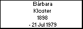

l i n k s
Children with:
Alejandro Wagner Fritz
Children:
Celia Edelma (Coca) Wagner Kloster
Ida Wagner Kloster
Augusto David Wagner Kloster
Camilo Matías Wagner Kloster
Bárbara Kloster
Born: 1898, Argentina
Married to
Alejandro Wagner Fritz
Died: 21 Jul 1979, Argentina
Generated by
GenDesigner 2.0 beta 3.6